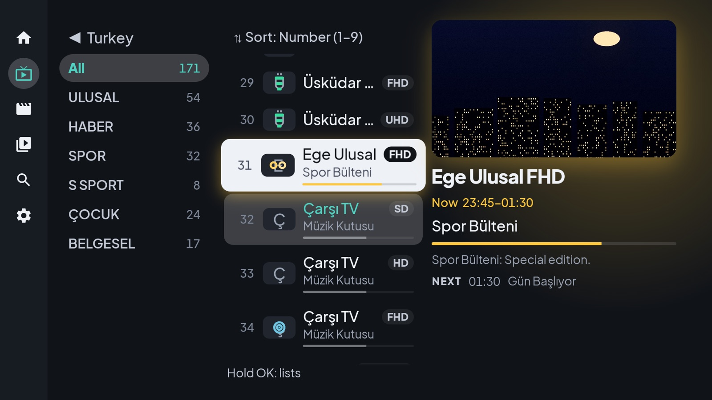
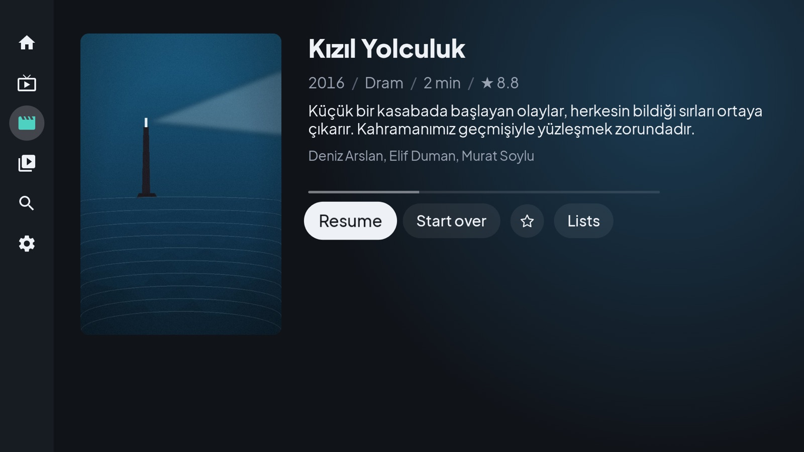

Live TV
Find a channel fast
Pick a country and a category on the left. See the channel list, a live preview, and the program that is on now and next. The program guide (EPG) is built in.
IPTV player for Android TV and Google TV

Live TV
Pick a country and a category on the left. See the channel list, a live preview, and the program that is on now and next. The program guide (EPG) is built in.
Player
Change channels with Up and Down. Press Left for the previous channel. The info bar shows the program and the time. The quick menu has audio, subtitles, picture and an external player. A broken stream reconnects by itself.

Movies
Browse movies by country and category. Keep your favorites and your own lists. Continue watching is one step away.

Movie details
The details page shows the plot, genre, length and rating. Press Resume to continue at the saved position, or start over.

Series
Open a series and choose a season and an episode. When an episode ends, a countdown starts the next one.

The app opens on your last screen, tab, category and channel. Movies and series continue at the saved position.
"TRT 1 HD / FHD / FHD RAW" becomes one row. You choose the quality order.
See what is on now and next, with program details.
Built for the TV remote. Large text, clear focus, no touch needed.
A channel that does not open is marked and hidden for 24 hours.
Mark favorites and keep your own lists of channels, movies and series.
Type a few letters and see results for movies, series and channels.